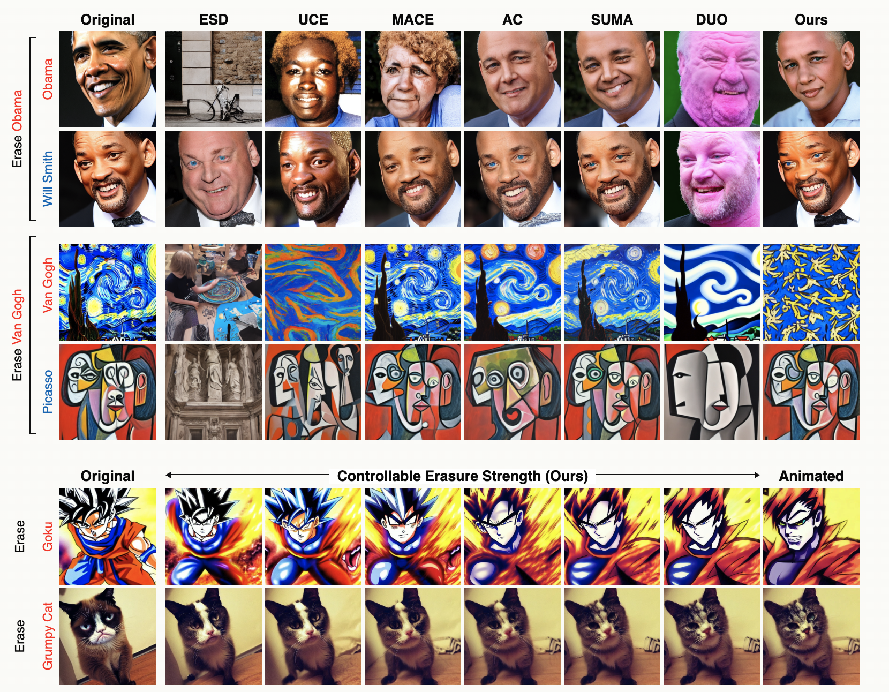

Push–Pull Attentional Anchoring for Diffusion Concept Erasure
Introduces a bounded push–pull objective in cross-attention space that achieves a state-of-the-art erasure–preservation trade-off by suppressing target concepts while limiting collateral damage to related concepts. For example, the method effectively erases “Barack Obama” while preserving “Will Smith.” It additionally provides controllable erasure strength and generalizes across architectures, including SD 1.4 and FLUX.
Project page
Paper & code forthcoming